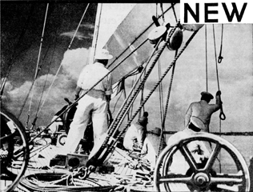
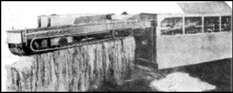
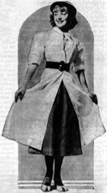
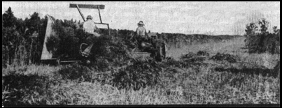

|  |
| |
 |
Sailing the seas with sails and rope made of hemp. |
American farmers are promised a new cash crop with an annual value of several hundred million dollars, all because a machine has been invented which solves a problem more than 6,000 years old. It is hemp, a crop that will not compete with other American products. Instead, it will displace imports of raw material and manufactured products produced by underpaid coolie and peasant labor and it will provide thousands of jobs for American workers throughout the land.
The machine which makes this possible is designed for removing the fiber-bearing cortex from the rest of the stalk, making hemp fiber available for use without a prohibitive amount of human labor.
Hemp is the standard fiber of the world. It has great tensile strength and durability. It is used to produce more than 5,000 textile products, ranging from rope to fine laces, and the woody “hurds” remaining after the fiber has been removed contain more than seventy-seven per cent cellulose, and can be used to produce more than 25,000 products, ranging from dynamite to Cellophane.

Hemp fiber being delivered from machine ready for baling. Pile of pulverized hurds beside machine is seventy-seven per cent cellulose.
Machines now in service in Texas, Illinois, Minnesota, and other states are producing fiber at a manufacturing cost of half a cent a pound, and are finding a profitable market for the rest of the stalk. Machine operators are making a good profit in competition with coolie-produced foreign fiber while paying farmers fifteen dollars a ton for hemp as it comes from the field.

Modern version of linen duster made from hemp.
From the farmers’ point of view, hemp is an easy crop to grow and will yield from three to six tons per acre on any land that will grow corn, wheat, or oats. It has a short growing season, so that it can be planted after other crops are in. It can be grown in any state of the union. The long roots penetrate and break the soil to leave it in perfect condition for the next year’s crop. The dense shock of leaves, eight to twelve feet above the ground, chokes out weeds. Two successive crops are enough to reclaim land that has been abandoned because of Canadian thistles or quack grass.

Harvesting hemp with a grain binder. Hemp grows luxuriously in Texas.
Under old methods, hemp was cut and allowed to lie in the fields for weeks until it “retted” enough so the fibers could be pulled off by hand. Retting is simply rotting as a result of dew, rain, and bacterial action. Machines were developed to separate the fibers mechanically after retting was complete, but the cost was high, the loss of fiber great, and the quality of the fiber comparatively low. With the new machine, known as a decorticator, hemp is cut with a slightly modified grain binder. It is delivered to the machine where an automatic chain conveyor feeds it to the breaking arms at the rate of two or three tons per hour. The hurds are broken into fine pieces which drop into the hopper, from where they are delivered by blower to a baler or to truck or freight car for loose shipment. The fiber comes from the other end of the machine, ready for baling.
From this point on almost anything can happen. The raw fiber can be used to produce strong twine or rope, woven into burlap, used for carpet warp or linoleum backing, or it can be bleached and refined, with resinous by-products of high commercial value. It can, in fact, be used to replace the foreign fibers which now flood our markets.
Thousands of tons of hemp hurds are used every year by one large powder company for the manufacture of dynamite and TNT. A large paper company, which has been paying more than a million dollars a year in duties on foreign-made cigarette papers, now is manufacturing these papers from American hemp grown in Minnesota. A new factory in Illinois is producing fine bond papers from hemp. The natural materials in hemp make it an economical source of pulp for any grade paper manufactured, and the high percentage of alpha cellulose promises an unlimited supply of raw materials for the thousands of cellulose products our chemists have developed.
It is generally believed that all linen is produced from flax. Actually, the majority comes from hemp — authorities estimate that more than half of our imported linen fabrics are manufactured from hemp fiber. Another misconception is that burlap is made from hemp. Actually, its source is usually jute, and practically all of the burlap we use is woven by laborers in India who receive only four cents a day. Binder twine is usually made from sisal which comes from Yucatan and East Africa.
All of these products, now imported, can be produced from home-grown hemp. Fish nets, bow strings, canvas, strong rope, overalls, damask tablecloths, fine linen garments, towels, bed linen, and thousands of other everyday items can be grown on American farms. Our imports of foreign fabrics and fibers average about $200,000,000 per year; in raw fibers alone we imported over $50,000,000 in the first six months of 1937. All of this income can be made available for Americans.
The paper industry offers even greater possibilities. As an industry it amounts to over $1,000,000,000 a year, and of that eighty percent is imported. But hemp will produce every grade of paper, and government figures estimate that 10,000 acres of hemp will produce as much paper as 40,000 acres of average pulp land.
One obstacle in the onward march of hemp is the reluctance of farmers to try new crops. The problem is complicated by the need for proper equipment a reasonable distance from the farm. The machine cannot be operated profitably unless there is enough acreage within driving range and farmers cannot find a profitable market unless there is machinery to handle the crop. Another obstacle is that the blossom of the female plant contains marijuana, a narcotic, and it is impossible to grow hemp without producing the blossom. Federal regulations now being drawn up require registration of hemp growers, and tentative proposals for preventing narcotic production are rather stringent.
However, the connection of hemp as a crop and marijuana seems to be exaggerated. The drug is usually produced from wild hemp or locoweed which can be found on vacant lots and along railroad tracks in every state. If federal regulations can be drawn to protect the public without preventing the legitimate culture of hemp, this new crop can add immeasurably to American agriculture and industry.
Popular Mechanics Magazine can furnish the name and address of the maker of, or dealer in, any article described in its pages. If you wish this information, write to the Bureau of Information, inclosing a stamped, self-addressed envelope.
the authorized on-line version of Jack Herer’s “The Emperor Wears No Clothes”
| previous page | Chapter 3 | next page |
|
 |
 |
 |
 |